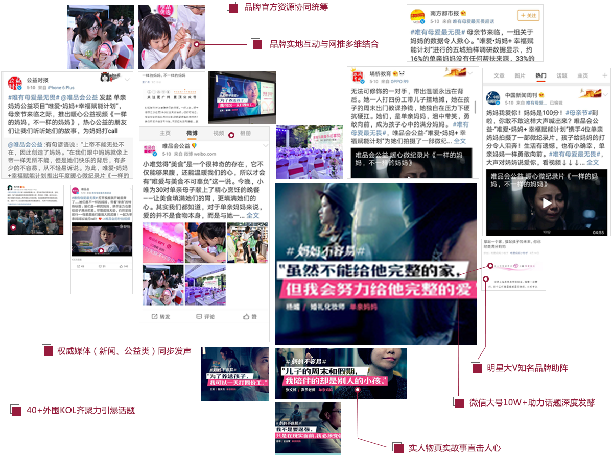

Only a loving mother can plan
唯品会发起公益项目“唯爱妈妈+ 幸福赋能计划”，倡导更多人关注单亲妈妈这一特殊群体，并加入项目，从而塑造唯品会关爱女性发展的差异化公益形象，提升用户对于品牌的辨析度与好感度。通过官方联合公益行业媒体的微信微博推送&地铁广告投放
时值母亲节前夕，以项目定制微视频为载体，利用微博的开放性优势，制造和引爆话题，扩大传播范围
推广目标以暗线为主，明暗线结合，最大化凸显品牌公益形象以微话题为阵地，将品牌资源与社会资源有机链接，集聚人气，引爆话题借力母亲节节点，从母爱切入话题，结合微视频这一载体，带动单亲妈妈话题从视频内容出发，同步嫁接热点、植入互动，多角度扩散话题扩大品牌曝光
Weibo topics planned to advance
广泛集结各领域KOL，嫁接热点关键词，最大化辐射人群，扩散#微话题#，为热门榜积蓄热度
渠道：品牌资源、外围KOL（各类别）
内容：话题/话题+补充内容、热点内容
广主持人持续引导，公众受话题热度辐射继续参与
渠道：品牌资源为主
内容：话题/话题+补充内容
话题集中正能量情感导向更垂直地向话题页导流
渠道： #二更夜聊#、话题榜、品牌资源、外围KOL（母婴/情感为主）
内容：话题/话题+补充内容、互动内容
Seven bright spot
覆盖量
总互动量
总浏览量
粉丝